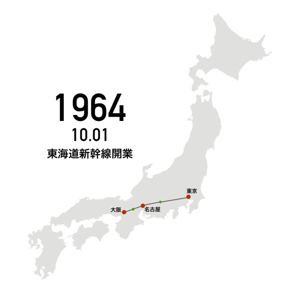
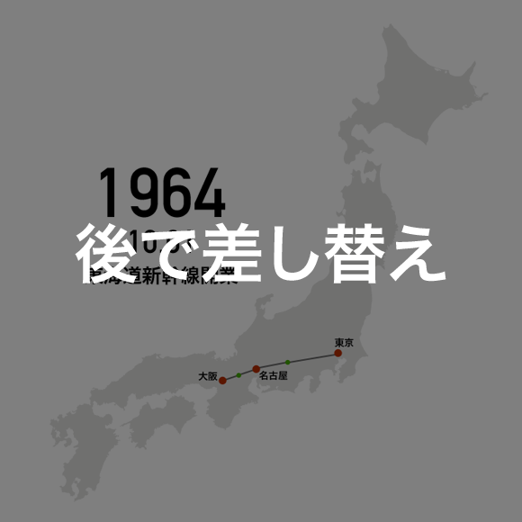

Loading...
日本を変えた新幹線
ビジュアルで振り返る半世紀
伸びる路線 縮んだ列島
「時間地図」で見る高速化の変遷
新幹線の登場から半世紀
高速化と路線の拡大によって
日本列島は小さく、狭くなった

1964～1975年

新幹線は東京への一極集中をいかに加速させたのか。右の「時間地図」は社会インフラが専門の東京大学の清水英範教授と東北大学の井上亮准教授が国土交通省のデータなどをもとに考案し、日本経済新聞社が動画化した。鉄道網の普及で東京を中心とする全国の200以上の地域間の所用時間がどう縮まったかをコンピューターで視覚化しており、新幹線の影響が大きい地域間ほど距離が短くなる。
1964年の開業時に東京～新大阪間は約4時間かかったが、翌年には3時間強になった。1972年に新大阪～岡山間が開業した山陽新幹線は75年に全線開通し、東京～博多間が最短で6時間56分で結ばれた。
1976～1995年
1982年に東北新幹線と上越新幹線が部分開業した。新幹線ネットワークは515km（東京～新大阪間）から、約20年間でほぼ倍の1800km強に伸びた。1987年に日本国有鉄道（国鉄）が分割・民営化され、JR7社が誕生した。92年には300系「のぞみ」の営業運転が開始し、東京～新大阪間は約2時間30分で結ばれた。
開業時には家族が着飾って乗車した新幹線は生活の身近な存在となり、遠距離恋愛をテーマにした「シンデレラ・エクスプレス」、「そうだ 京都、行こう」といったCMが話題を呼んだ。
1996～2014年

1997年に秋田新幹線、長野（北陸）新幹線が相次いで開業。東西だけでなく南北をつなぐ移動時間が短くなり、東京からの日帰り・通勤圏内が広がった。2011年に九州新幹線（鹿児島ルート）が全線開業し、鹿児島～新青森の約2000kmがつながった。
1965年度の東海道新幹線の1日の平均輸送人員は約8万5000人だったが、現在は新幹線全体で90万人を超える。
「時間地図」を見ると、この半世紀で日本列島は小さく、狭くなったことがわかる。清水教授は高速道路網についても時間地図を作成したが、「新幹線の影響が大きい鉄道ほどの劇的な変化は起きなかった」という。